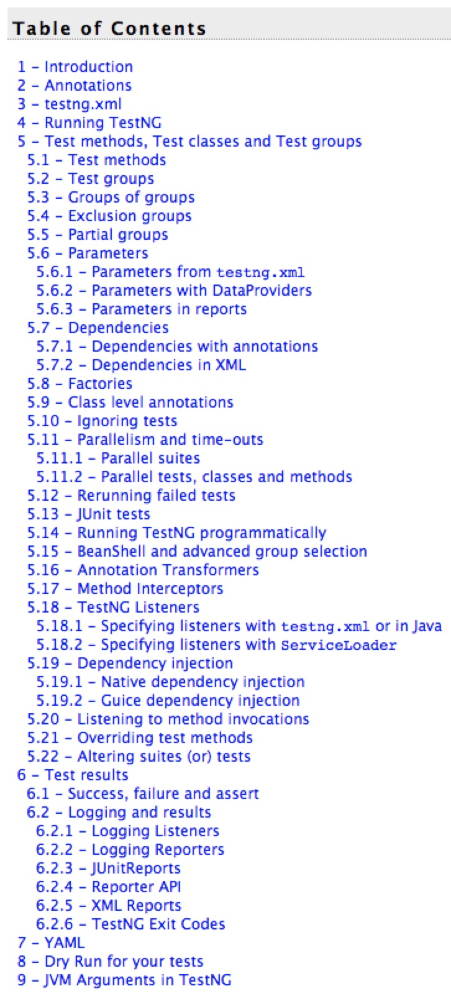

1 TestNG排名第一的测试框架¶

TestNG是Test Next Generation的缩写，如果说在测试界TestNG是第一测试框架，那么很难有第二个测试框架能跟它一比高下。在Java自动化领域，TestNG更是已经成为行业标配了。TestNG无人不知无人不晓，但是对它有深入了解的，还是比较少的。本系列文章就跟随着官方文档的步伐，由浅入深地对TestNG进行全方面的学习。
TestNG的灵感来自于JUnit和NUnit，在它们基础上增加了很多很牛的功能，比如说：
注解。
多线程，比如所有方法都在各自线程中，一个测试类一个线程等。
验证代码是否多线程安全。
灵活的测试配置。
支持数据驱动（@DataProvider）。
支持参数化。
强大的执行机制（不需要TestSuite）。
能跟各种工具结合（比如IDEA、Maven等）。
内嵌BeanShell。
提供运行时和日志的JDK函数（不需要添加dependencies）。
提供应用服务器测试依赖的方法。
一句话形容就是，TestNG强大到能覆盖所有测试类型：单元测试、功能测试、端到端测试、集成测试等等等。
万物皆可由TestNG测试。
一个简单的示例如下：
package example1;
import org.testng.annotations.*;
public class SimpleTest {
@BeforeClass
public void setUp() {
// code that will be invoked when this test is instantiated
}
@Test(groups = { "fast" })
public void aFastTest() {
System.out.println("Fast test");
}
@Test(groups = { "slow" })
public void aSlowTest() {
System.out.println("Slow test");
}
}
setUp()会在测试类创建后，测试方法执行前运行。
测试方法名字可以任意的，TestNG通过@Test注解来标识。
可以把测试方法按group分组。
然后使用xml来配置运行策略：
<project default="test">
<path id="cp">
<pathelement location="lib/testng-testng-5.13.1.jar"/>
<pathelement location="build"/>
</path>
<taskdef name="testng" classpathref="cp"
classname="org.testng.TestNGAntTask" />
<target name="test">
<testng classpathref="cp" groups="fast">
<classfileset dir="build" includes="example1/*.class"/>
</testng>
</target>
</project>
使用ant调用：
c:> ant
Buildfile: build.xml
test:
[testng] Fast test
[testng] ===============================================
[testng] Suite for Command line test
[testng] Total tests run: 1, Failures: 0, Skips: 0
[testng] ===============================================
BUILD SUCCESSFUL
Total time: 4 seconds
最后就能看报告了：
start test-output\index.html (on Windows)
更多内容请关注后续文章：

参考资料：